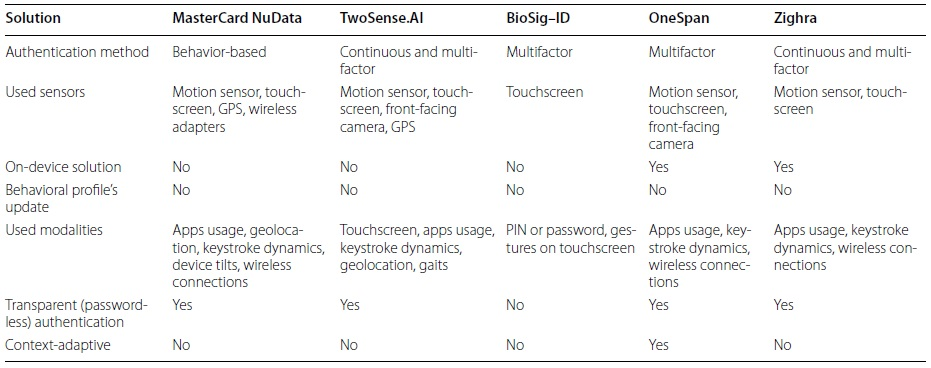
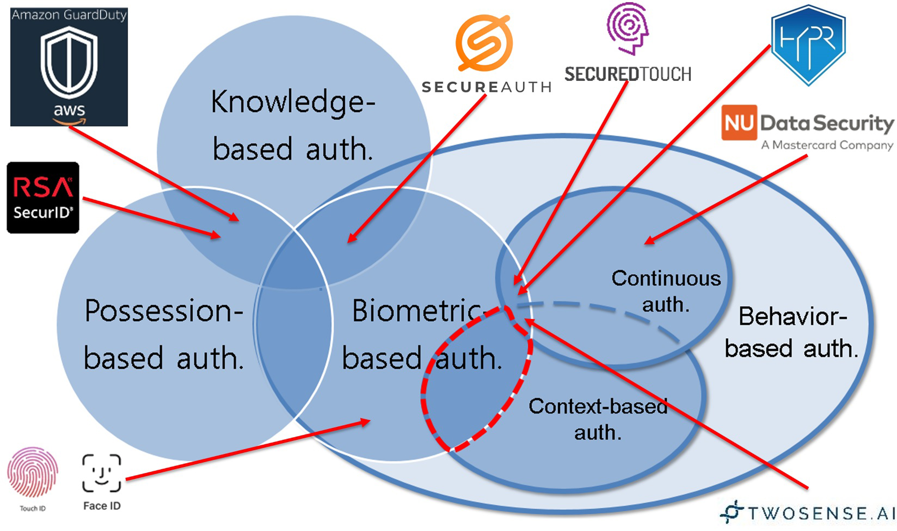
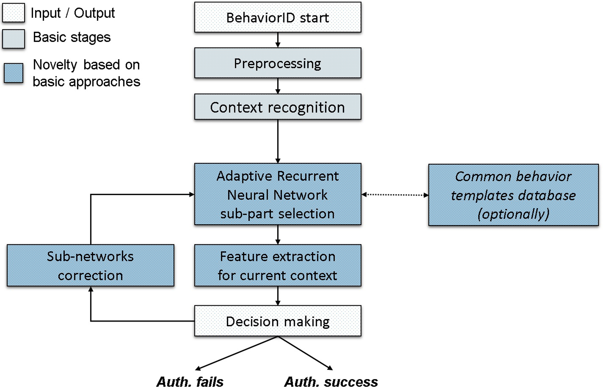
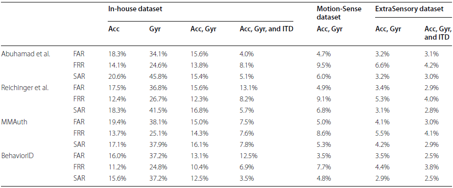

The comparison of modern multifactor authentication and access control solutions, for mobile devices are presented below.
|  |
Promising approach is provided by modern behavior-based authentication technologies. Typically, they are based on biometric data capturing and extracting userspecific behavioral patterns needed for the analysis of several modalities during user interactions with mobile devices. However, the performance of these systems significantly depends on the context, namely user’s activity (motionless, walking, running) and application in use. Thus, spoofing-proof transparent user-friendly methods for user authentication are needed.
To provide on-device context-dependent behavior-based authentication, we propose the BehaviorID solution. The comparison of scopes for state-of-the-art and proposed methods is presented below.
|  |
The flowchart of the user’s features processing with proposed method is presented below.
|  |
The user authentication with the BehaviorID method starts from a triggering event, such as launch a predefined application. Then, signals from the device’s embedded sensors are being gathered until finalization trigger event, for instance, start typing in a launched application. At the second step, context recognition is performed using preprocessed signals. The recognition model is based on convolutional neural network (CNN) for feature extraction from inputted signals. The prepared signals are combined into modalities to be processed with advanced A-RNN model. The feature of the network is usage of mixture layer to improve performance in case of processing sequences with multiple patterns, e.g., mixture of output signals from embedded sensors. The output of context recognition model is used as an external parameter for mixture layers of A-RNN to compensate possible alterations of of user behavioral profile. Finally, the outputs of each A-RNN related to individual modality are processed with decision-making module. In case of positive decision (user is authenticated), the user is notified about the success authentication, and the extracted features are used to update the A-RNN parameters. Otherwise, negative decision is reported (user is not recognized).
Effective countermeasures against spoofing attack during user authentication requires using additional factors. BehaviorID allows “strengthening” of widespread authentication methods by the usage of several modalities, for example:
Rich functionality of the proposed BehaviorID method makes it an attractive solution for transparent multifactor on-device user authentication. Performance evaluation of the state-of-the-art and proposed BehaviorID solutions was performed for both single modal and multimodal user authentication. The following use cases were considered:
BehaviorID performance evaluation was done using a set of public and in-house datasets of behavioral patterns for considered modalities in various usage contexts, such as The ExtraSensory dataset, MotionSense dataset, SherLock dataset, H-MOG dataset, UMDAA-02 dataset, BB-MAS dataset, in-house fixed-context dataset to name a few.
For comparison, we considered the following state-of-the-art solutions for behavior-based user authentication on smartphones:
Estimated FAR, FRR, and SAR for single and multifactor authentication cases for fixed usage context (users are still sitting) using state-of-the-art and proposed methods are presented below. The “Acc” and “Gyr” stand for accelerometer and gyroscope.
|  |
Moving from single factor to multifactor authentication allows for decreasing SAR values from 37.2 to 2.9% by preserving low FAR (about 2.5%) and FRR (near 8% ) values for the proposed method (Table 2). The obtained results are close to state of the art in the domain of behavior-based authentication. Note that the obtained SAR values for multifactor authentication (SAR<7%) corresponds to class 3 (strong) tier of ATAM. This makes the proposed solution an attractive candidate for use in security-sensitive scenarios.
The next stage of performance analysis is aimed at the evaluation of considered solutions for the case of multimodal authentication in several usage contexts. The H-MOG and UMDAA-02 datasets were used for the estimation of FAR and FRR in this case. The keystroke dynamics, device fine motions, swipe patterns, applications profiling, and gaze tracking were used as authentication factors. Also, the most difficult case of long-term tracking of behavioral template was considered. The performance analysis was done on SherLock dataset using three modalities, namely keystroke dynamics, application usage logs, and device’s fine motions.
The estimated values of FAR and FRR metrics for the state-of-the-art and proposed solutions for case of changing usage context (from still sitting to walking) are presented below.
| Dataset | Metric | Abuhamad et al. method | Reichinger. method | MMAuth method | BehaviorID method |
|
H-MOG dataset |
FAR, % | 1.8% | 0.9% | 1.3% | 0.3% |
| FRR, % | 3.0% | 1.5% | 1.9% | 1.3% | |
|
UMDAA-02 dataset |
FAR, % | 7.4% | 6.8% | 7.9% | 7.0% |
| FRR, % | 5.4% | 4.1% | 5.0% | 3.5% |
For comparison, the estimated values of FAR and FRR metrics for modern and proposed solutions for the 3-week usage period (SherLock dataset) are presented below.
| Metric | Abuhamad et al. method | Reichinger. method | MMAuth method | BehaviorID method |
| FAR, % | 9.4% | 2.8% | 6.6% | 2.1% |
| FRR, % | 12.7% | 4.2% | 11.9% | 3.9% |
Performance analysis of the proposed methods showed that BehaviorID allows outperforming the state-of-theart multifactor behavior-based authentication methods even in the most difficult case of long-term tracking of behavioral patterns (about 2.1% FAR and 3.9% FRR). Also, the proposed method provides low error rate in various usage context (about 0.5% FAR and 1.3% FRR) by preserving fast detection of non-owner user (within 0.5 − 1.0 s for Samsung Galaxy S21 smartphone). This makes the proposed BehaviorID method a promising candidate for the next-generation user authentication systems on mobile and wearable devices.
Some company, Copyright © 2022